使用说明
整体界面如图，左侧为绘制区域，右侧为控制区域，点击INFO等可展开面板;
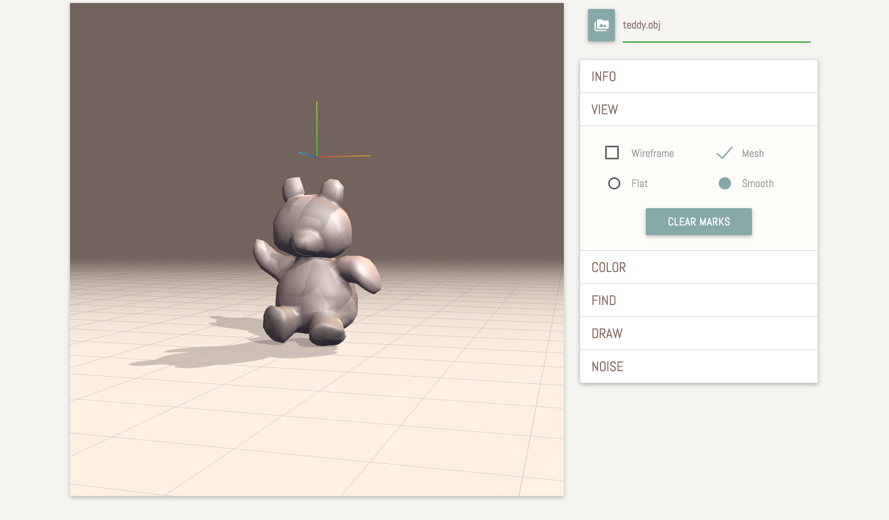
点击右上角，读取obj或off模型文件;

绘制区域中央出现了bunny;

展开INFO面板可查看网格信息;

在VIEW面板中可以切换显示模式; 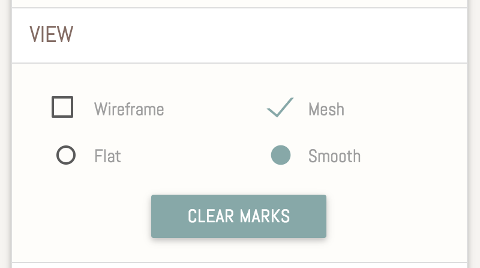
比如现在从默认的smooth切换到了flat。如果模型的面片数很少，那么开始加载的时候就会直接切到flat模式;

然后显示wireframe并隐藏掉mesh;

鼠标左键可以旋转视角; 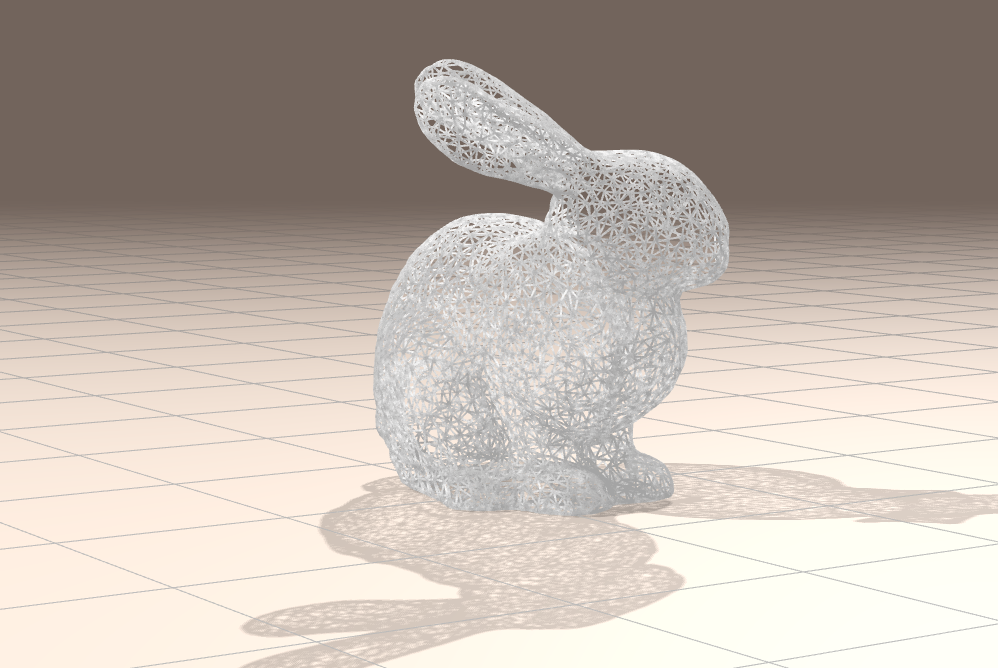
在COLOR区域设置颜色映射，右侧竖条是预览。这里还可以上传颜色表、切换映射模式、自定义映射; 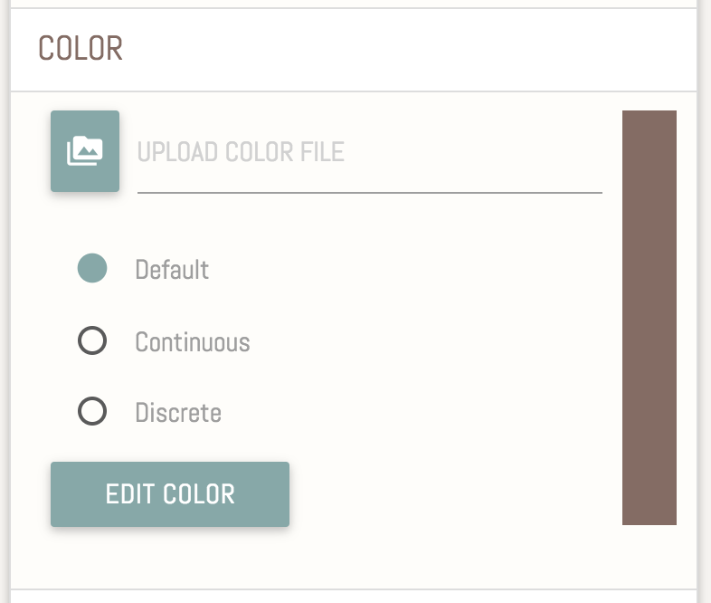
让我们把模式切成离散颜色。由于没有读入颜色表，我默认地以面片编号作为颜色数值，然后就变成了这样; 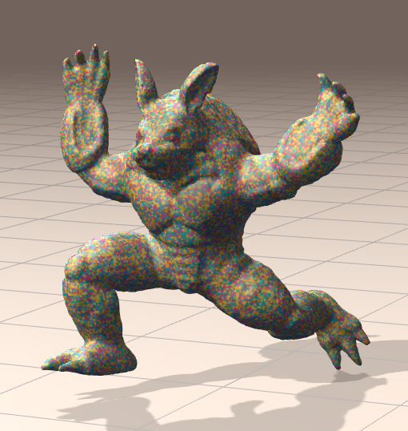
接下来读一下颜色表，这回可以有规律地着色了;

默认的颜色表是这三个，上图就是使用第三个来着色的。连续颜色模式看起来过渡很自然，因为用了Lab颜色空间来做插值;


程序的强大之处在于它可以自定义颜色映射，三种模式都可以自定义。点击Color Edit按钮就可以弹出下图的弹框。具体怎么用看右边使用说明; 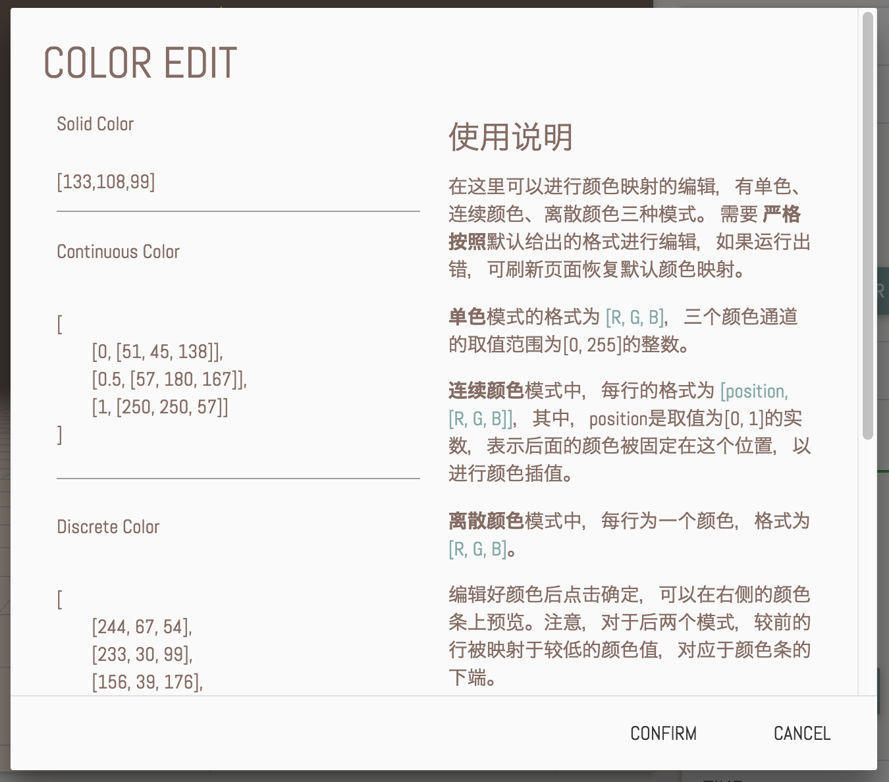
比如我设计了一个这样的颜色映射:
xxxxxxxxxx91 [2 [0, [0, 0, 128]],3 [0.15, [0, 0, 255]],4 [0.382, [50, 255, 255]],5 [0.5, [128, 255, 128]],6 [0.618, [255, 255, 50]],7 [0.85, [255, 0, 0]],8 [1, [128, 0, 0]]9 ]- 预览条:

- 模型变成了这样;

- 接下来是各个查找功能，它们位于FIND面板; 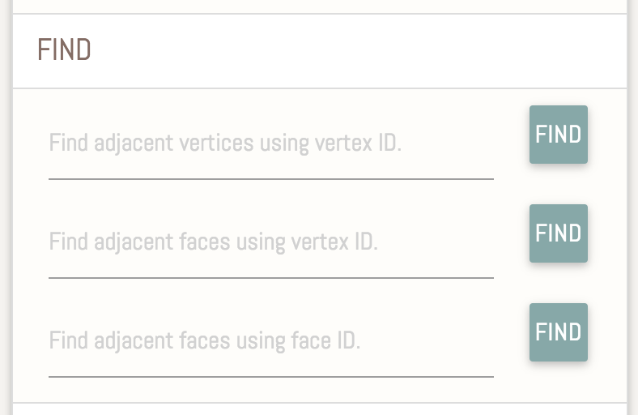
- 查找一个顶点的相邻点，为了显示效果，这些用于标示的球体的半径是根据边长计算的。可以使用鼠标右键拖动绘图区来平移视角，滚轮滚动来缩放; 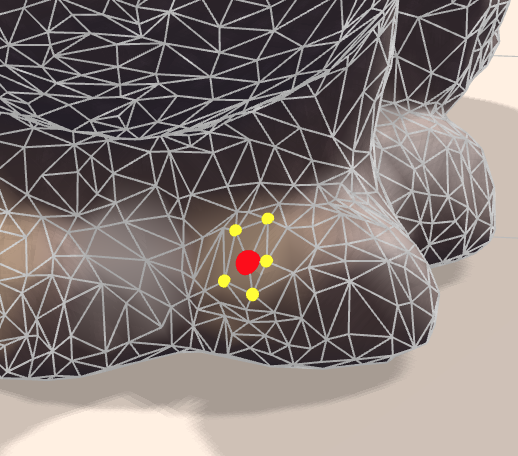
- 查找一个顶点的相邻面; 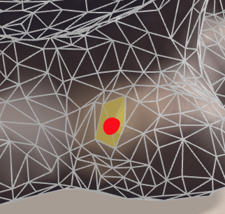
- 查找一个面的相邻面; 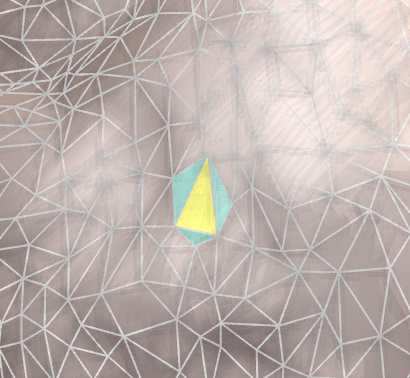
- 然后是绘制区域、法向量功能，这些功能位于DRAW面板。输入的各个编号之间分隔符可以为空格、逗号、正斜杠、分号;

- 绘制区域;

- 也可以把mesh隐藏掉，只看这个区域;

- 绘制法线; 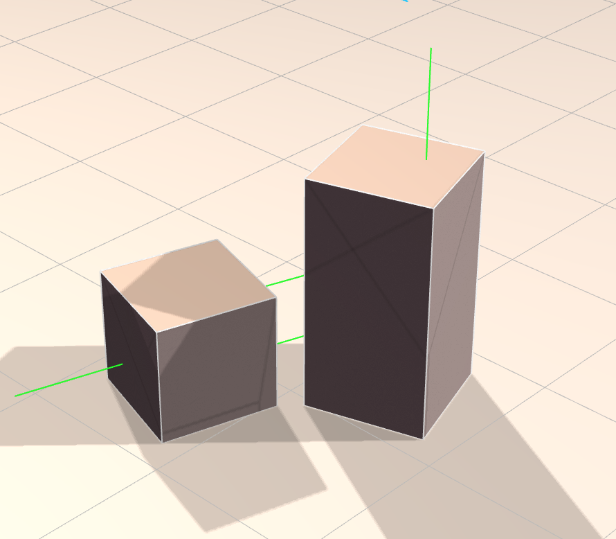
- 如果输入区域留空则绘制全部法线; 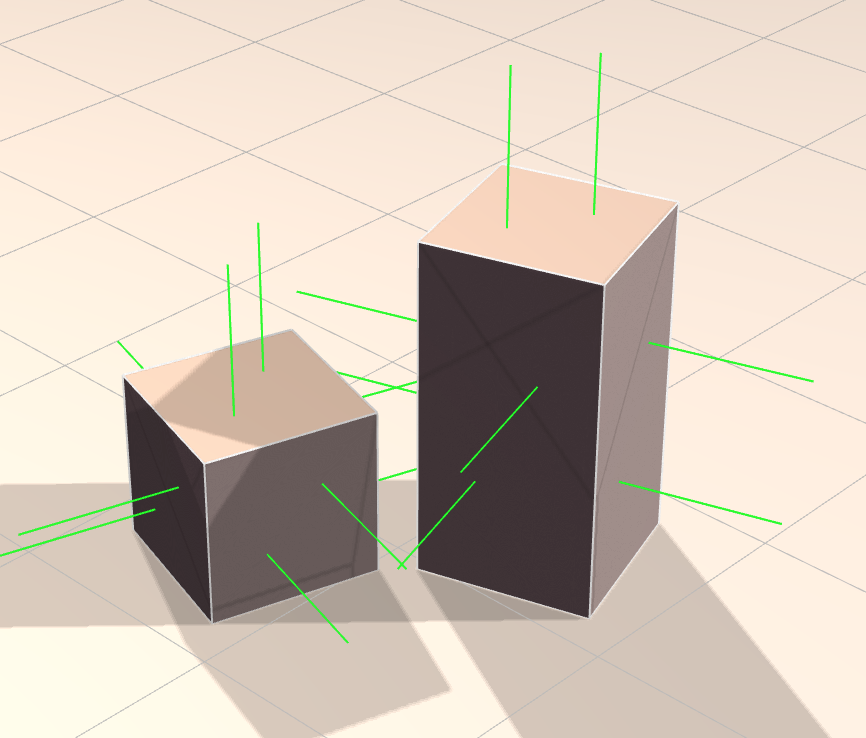
- 犹他茶壶的全部法线;

- 我选了第一个选做题目，相关功能位于NOISE面板; 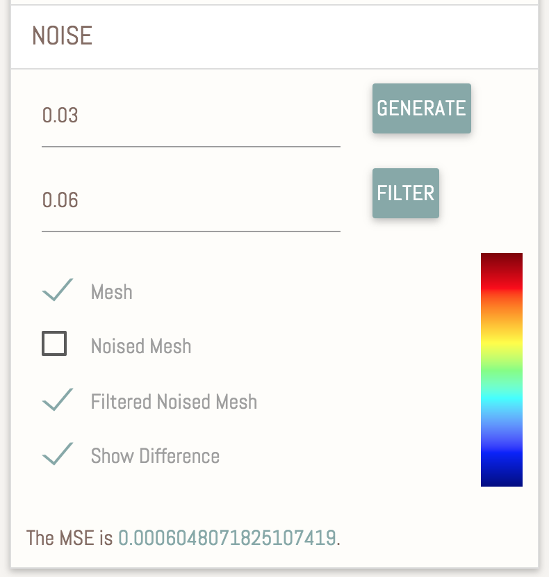
- 我们尝试为上一步的茶壶生成的高斯噪声，蓝色的为生成的结果，位于原mesh内部的部分被消隐掉了，可以隐藏掉mesh来查看;

- 实验发现，当滤波使用的是噪声二倍的时候平滑效果较好，因此生成噪声的时候默认在下面填入了。接下来点击Filter进行滤波，得到下图。红色的即为滤波后的模型。该步骤同时计算了滤波后模型与原始模型的差异，并绘制了出来;

- 现在单独查看滤波后的模型; 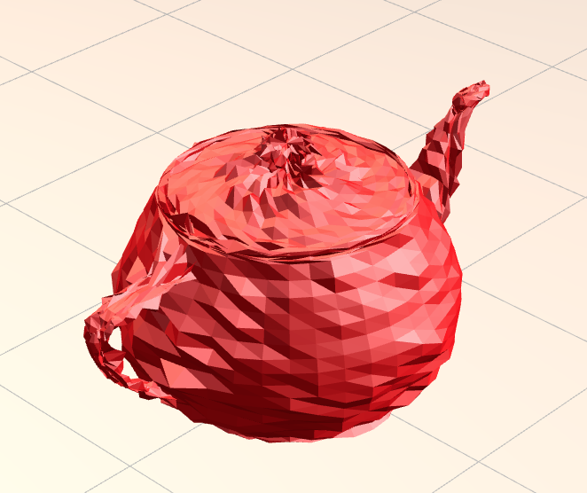
- 现在单独查看滤波后的模型; 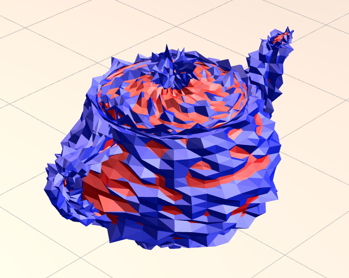
- 单独查看差异对比。这里同样使用了颜色映射(不同的是这次是对顶点着色)，暖色是凸出来的，冷色是凹进去的。为了增强显示效果，我放大了模型的差异(使用了平方根函数)。由这个图也可以看出来，噪声+滤波之后得到的模型会去除原模型中较为尖锐的部分。